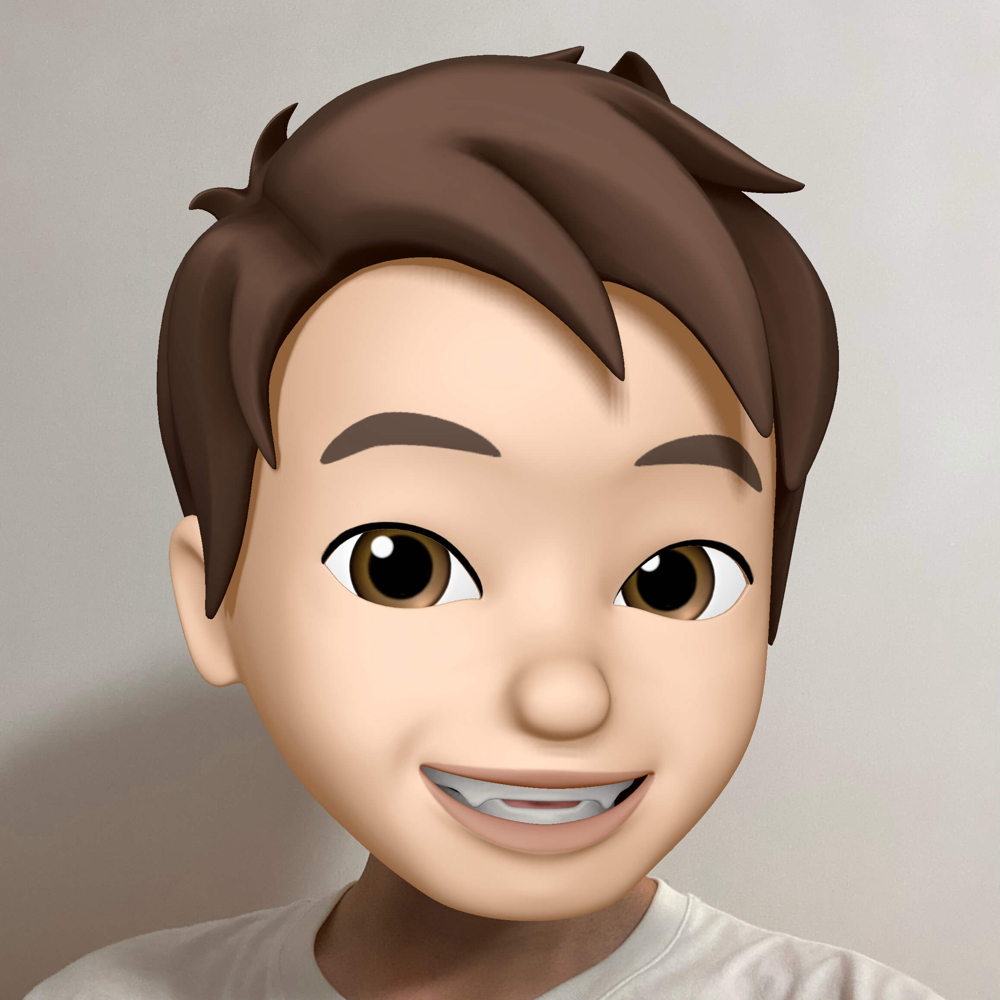

I'm a post-90s guy who still has dreams to chase. Tangpingnism is not my pursuit, grasping the present and preparing for the future is what I have been doing. I'm a gamer of LOL and CF, as I grow older, they are getting farther and farther away from me. Plus, I really like listening to pure music, It is no exaggeration to say that in most cases I can name the pure music I hear.
Currently, I'm working as a back-end developer at GBase located in Tianjin. Back end development based on Spring framework and a little front-end code are what I usually use to do the programming. Although I haven't made any achievements in the field yet, computer technologies will always be my passion.
As we all know, it's really hard to say goodbye to the past, the best way is to grasp the present and prepare for the future. At last, my motto : Every dog has its day.